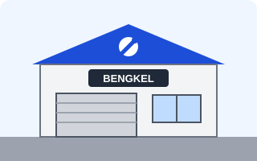

Bengkel Sinar Roda

Alamat: Jl. Kenanga Raya No. 45, Kelurahan Contoh, Kota Fiktif
Layanan Motor Konvensional
- Ganti Oli Mesin
- Tune Up
- Servis Rutin
- Servis CVT
Layanan Motor Listrik
Belum tersedia.
Jam Buka
Senin - Sabtu, - WIB
Berikut bengkel mitra Bengkelin beserta layanan untuk motor konvensional dan motor listrik. Pilih bengkel yang sesuai lalu lakukan booking servis.

Alamat: Jl. Kenanga Raya No. 45, Kelurahan Contoh, Kota Fiktif
Belum tersedia.
Senin - Sabtu, - WIB
Alamat: Jl. Merpati No. 8, Kelurahan Contoh, Kota Fiktif
Belum tersedia.
Senin - Jumat, - WIB
Alamat: Jl. Arus Listrik No. 12, Kelurahan Contoh, Kota Fiktif
Tidak tersedia, bengkel ini khusus motor listrik.
Setiap hari, - WIB
Alamat: Jl. Cendrawasih No. 21, Kelurahan Contoh, Kota Fiktif
Senin - Sabtu, - WIB